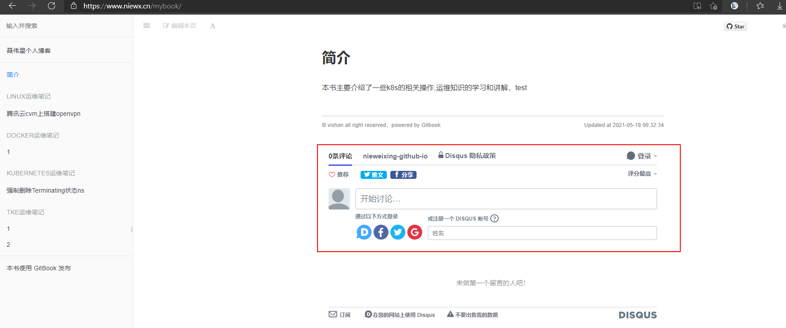

配置gitbook插件
gitbook默认只有一些插件，其他插件需要自己安装，安装插件很简单，在content目录下配置一个book.json即可
{
"title": "运维操作指南",
"description": "运维操作指南",
"author": "vishon",
"gitbook": ">= 3.2.2",
"language": "zh-hans",
"links": {
"sidebar": {
"聂伟星个人博客": "https://www.niewx.cn"
}
},
"plugins": [
"github",
"editlink",
"-lunr",
"-search",
"search-plus",
"tbfed-pagefooter",
"splitter",
"page-toc-button",
"back-to-top-button",
"-lunr", "-search", "search-plus",
"github-buttons@2.1.0",
"favicon@^0.0.2",
"3-ba",
"disqus",
"theme-default"
],
"pdf": {
"toc": true,
"pageNumbers": true,
"fontSize": 11
},
"pluginsConfig": {
"github": {
"url": "https://github.com/nieweixing"
},
"editlink": {
"base": "https://github.com/nieweixing/mybook/tree/gh-pages",
"label": "编辑本页"
},
"tbfed-pagefooter": {
"copyright":"© vishon",
"modify_label": "Updated at",
"modify_format": "YYYY-MM-DD HH:mm:ss"
},
"image-captions": {
"caption": "图片 - _CAPTION_"
},
"github-buttons": {
"repo": "nieweixing/mybook",
"types": ["star"],
"size": "small"
},
"favicon": {
"shortcut": "favicon.ico",
"bookmark": "favicon.ico"
},
"disqus": {
"shortName": "nieweixing-github-io"
},
"3-ba": {
"token": "014238987a800856443fcb5e465f4cdd"
}
},
"generator": "site"
}
配置好之后，需要执行npm install安装下插件，安装完成后会将插件放在node_modules目录，这里如果下载插件很慢，可以直接到我的github目录下拷贝对应的包https://github.com/nieweixing/mybook/tree/gh-pages/gitbook
gitbook install ./content
配置discuss评论系统
这里可以给gitbook配置disscus评论系统
- 注册 disqus账号 https://disqus.com/
- 右上角 Setting --> Add Disqus To Site --> 最下面 GET STARTED --> I want to install ...
- 填写网站 name 和分类 --> Create Site
- 填写 Website URL如 https://www.niewx.cn/mybook
配置好之后再book.json的disqus字段配置你创建的shortname，最后在gitbook目录下执行发布命令发布到github，这样我们就可以使用discuss评论功能了

gitbook插件列表
- mygitalk 基于gitalk的评论插件 ➡️ https://github.com/snowdreams1006/gitbook-plugin-mygitalk
- theme-default GitBook的默认主题 ➡️ https://github.com/GitbookIO/theme-default
- autotheme 自动换肤插件 ➡️ https://github.com/willin/gitbook-plugin-autotheme
- sharing 默认的分享插件 ➡️ https://github.com/GitbookIO/plugin-sharing
- fontsettings 默认的字体、字号、颜色设置插件 ➡️ https://github.com/GitbookIO/plugin-fontsettings
- highlight 默认的代码高亮插件，通常会使用 prism 来替换 ➡️ https://github.com/GitbookIO/plugin-highlight
- search 默认搜索插件 ➡️ https://github.com/GitbookIO/plugin-search
- search-plus 支持中文搜索插件 ➡️ https://github.com/lwdgit/gitbook-plugin-search-plus
- prism 基于 Prism 的代码高亮 ➡️ https://github.com/gaearon/gitbook-plugin-prism
- favicon 更改网站的 favicon.ico ➡️ https://github.com/menduo/gitbook-plugin-favicon
- github 在右上角显示 github 仓库的图标链接 ➡️ https://github.com/GitbookIO/plugin-github
- github-buttons 显示 github 仓库的star和fork按钮 ➡️ https://github.com/azu/gitbook-plugin-github-buttons
- splitter 在左侧目录和右侧内容之间添加一个可以拖拽的栏，用来调整两边的宽度 ➡️ https://github.com/yoshidax/gitbook-plugin-splitter
- copy-code-button 为代码块添加复制的按钮 ➡️ https://github.com/WebEngage/gitbook-plugin-copy-code-button
- tbfed-pagefooter 自定义页脚，显示版权和最后修订时间 ➡️ https://github.com/zhj3618/gitbook-plugin-tbfed-pagefooter
- expandable-chapters 收起或展开章节目录中的父节点 ➡️ https://github.com/DomainDrivenArchitecture/gitbook-plugin-expandable-chapters
- expandable-chapters-small 比较好的折叠侧边栏 ➡️ https://github.com/lookdczar/gitbook-plugin-expandable-chapters-small-auto
- book-summary-scroll-position-saver 自动保存左侧目录区域导航条的位置 ➡️ https://github.com/yoshidax/gitbook-plugin-book-summary-scroll-position-saver
- ga 添加 Google 统计代码 ➡️ https://github.com/GitbookIO/plugin-ga
- sitemap 生成站点地图 ➡️ https://github.com/GitbookIO/plugin-sitemap
- baidu 使用百度统计 ➡️ https://github.com/poppinlp/gitbook-plugin-baidu
- Donate Gitbook 捐赠打赏插件 ➡️ https://github.com/willin/gitbook-plugin-donate
- anchors 标题带有 github 样式的锚点 ➡️ https://github.com/rlmv/gitbook-plugin-anchors
- anchor-navigation-ex 插件锚导航-EX ➡️ https://github.com/zq99299/gitbook-plugin-anchor-navigation-ex
- theme-api 编写 API 文档 ➡️ https://github.com/GitbookIO/theme-api
- katex 使用KaTex进行数学排版 ➡️ https://github.com/GitbookIO/plugin-katex
- editlink 内容顶部显示编辑本页链接 ➡️ https://github.com/zhaoda/gitbook-plugin-editlink
- ad 在每个页面顶部和底部添加广告或任何自定义内容 ➡️ https://github.com/zhaoda/gitbook-plugin-ad
- image-captions 抓取内容中图片的alt或title属性，在图片下面显示标题 ➡️ https://github.com/todvora/gitbook-plugin-image-captions
- chart 使用 C3.js 图表 ➡️ https://github.com/csbun/gitbook-plugin-chart
- styles-sass 使用 SASS 替换 CSS ➡️ https://github.com/GitbookIO/plugin-styles-sass
- styles-less 使用 LESS 替换 CSS ➡️ https://github.com/GitbookIO/plugin-styles-less
- disqus 添加 disqus 评论插件 ➡️ https://github.com/GitbookIO/plugin-disqus
- latex-codecogs 使用数学方程式 ➡️ https://github.com/GitbookIO/plugin-latex-codecogs
- mermaid 使用流程图 ➡️ https://github.com/JozoVilcek/gitbook-plugin-mermaid
- atoc 插入 TOC 目录 ➡️ https://github.com/willin/gitbook-plugin-atoc
- ace 插入代码高亮编辑器 ➡️ https://github.com/ymcatar/gitbook-plugin-ace
- sectionx 分离各个段落，并提供一个展开收起的按钮 ➡️ https://github.com/ymcatar/gitbook-plugin-sectionx
- mcqx 交互式多选插件 ➡️ https://github.com/ymcatar/gitbook-plugin-mcqx
- include-codeblock 通过引用文件插入代码 ➡️ https://github.com/azu/gitbook-plugin-include-codeblock
- fbqx 使用填空题 ➡️ https://github.com/Erwin-Chan/gitbook-plugin-fbqx
- spoiler 隐藏答案，当鼠标划过时才显示 ➡️ https://github.com/ymcatar/gitbook-plugin-spoiler
- anchor-navigation 锚点导航 ➡️ https://github.com/yaneryou/gitbook-plugin-anchor-navigation
- youtubex 插入 YouTube 视频 ➡️ https://github.com/ymcatar/gitbook-plugin-youtubex
- redirect 重定向页面跳转 ➡️ https://github.com/ketan/gitbook-plugin-redirect
- duoshuo 使用多说评论 ➡️ https://github.com/codepiano/gitbook-plugin-duoshuo
- jsfiddle 插入 JSFiddle 组件 ➡️ https://github.com/Mavrin/gitbook-plugin-jsfiddle
- jsbin 插入 JSBin 组件 ➡️ https://github.com/jcouyang/gitbook-plugin-jsbin
- Advanced Emoji 支持emoji表情 ➡️ https://github.com/codeclou/gitbook-plugin-advanced-emoji
- Puml 使用 PlantUML 展示 uml 图 ➡️ https://github.com/GitbookIO/plugin-puml
- Graph 使用 function-plot 绘制数学函数图 ➡️ https://github.com/cjam/gitbook-plugin-graph
- Todo 添加 Todo 功能 ➡️ https://github.com/ly-tools/gitbook-plugin-todo
- include-csv 展示 csv 文件内容 ➡️ https://github.com/TakuroFukamizu/gitbook-plugin-include-csv
- musicxml 支持 musicxml 格式的乐谱渲染 ➡️ https://github.com/ymcatar/gitbook-plugin-musicxml
- versions-select 添加版本选择的下拉菜单，针对文档有多个版本的情况 ➡️ https://github.com/prescottprue/gitbook-plugin-versions-select
- rss 添加 rss 订阅功能 ➡️ https://github.com/denysdovhan/gitbook-plugin-rss
- multipart 将书籍分成几个部分 ➡️ https://github.com/citizenmatt/gitbook-plugin-multipart
- url-embed 嵌入动态内容 ➡️ https://github.com/basilvetas/gitbook-plugin-url-embed